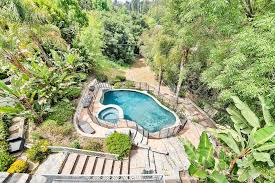

Welcome to Battambang
Experience Battambang — Cambodia’s second-largest city known for its history, culture, and growing economy. Explore local attractions, meet the community, and discover business opportunities.
City Facts
- Population: 250,000+
- Main Industries: Agriculture, Tourism, Education
- Founded: 11th Century
Explore the City

Visitor Information
Whether you’re a tourist or entrepreneur, Battambang offers opportunities to connect, explore, and invest. Visit the Chamber to learn about business networking, local events, and investment options.